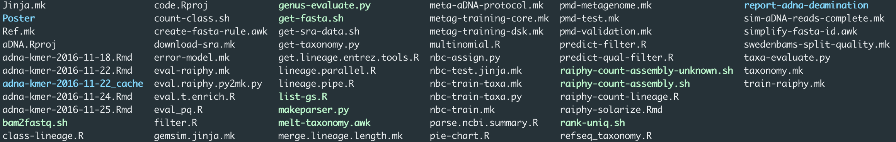
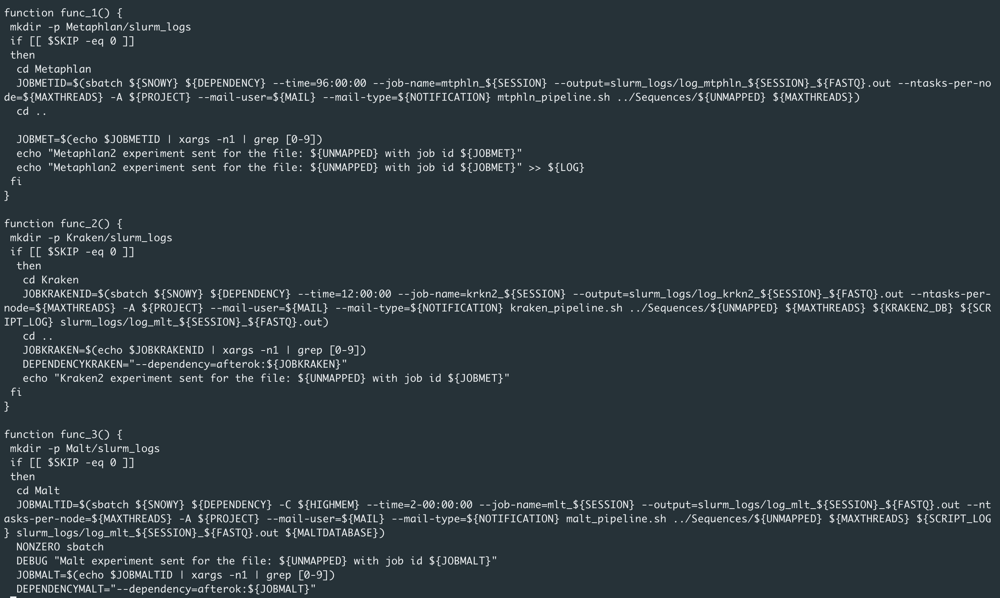

Who am I?
- Emrah Kırdök, Ph.D.
- Trained as a biologist
- Working on ancient metagenomics
- Giving lectures on bioinformatics and data analysis
Hi I am Emrah Kırdök. I think most of you already know me. I am working at Mersin University, deparment of biotechnology. Currently, I am working on ancient metagenomics and bioinformatics. Also I am teaching bioinformatics and data analysis at graduate and undergraduate level.
Nora and Zoe asked me to present some of my experiences and struggles in ancient metagenomics studies and how aMeta helped me to deal these.
After some thought, I’ve come up with this presentation.
Outline
- Ancient metagenomics is still a new discipline
- We do not have very well defined methods
- Some struggle is inevitable
- Lessons learnt, some good practice and tricks
- How aMeta helped me to understand
snakemake
Trained as a biologist, I moved to bioinformatics and ancient metagenomics field after my Ph.D. studies. However, this change was not really easy.
Bioinformatics is mostly done by trial and error. So, you run something, you observe, you fix and run again. And even ancient metagenomics is particularly hard, since it is still a young filed. There are just a handful of methods out there, and in most occasions you’ll have to get your hands dirty.
But there are some tricks and tips that make your life easier in the long run. In this presentation I will explain you my experience on ancient metagenomics from the start and show you some tricks.
Struggles
Bioinformatics methdodology
A simple methodlogy
However, generally it is more complicated. You will have more than one input and more then one outputs. Often, you will have some parameters to fine tune.
Bioinformatics methdodology
Actually it is much more complicated…
The core idea of bioinformatics methodology is to combine several tools into one neat workflow.
But it is much more complicated then that. To do a bionformatics research, you’ll need to use a lot of different tools, a lot of files, different paramters.
Often you’ll need to optimize parameters to get the correct result.
This is the general idea of bioinformatics work style.
Ancient metagenomics methodology
And in ancient metagenomics, it is much more complicated…
And in ancient metagenomics, this is much more harder. Generally, we classify DNA reads in fastq files using a reference sequence collection. THis collection contains DNA sequences that have known taxonomical ranks. By comparing each sequence to this collection, we try to identify the taxonomic origin of each DNA read.
However, in ancient metaggneomics, we also need to extract DNA sequences and authenticate the ancient status. So, at the end we do not know how many bacteria we have.
Ancient metagenomics methodology
It is even more complicated in a real situation:

What you will end up?
- Soon, you will have a big folder filled with data

Soon you will have a folder full of results. Then it becomes very tricky to find your way in these big folders. This is one of the earliest folder that I work.
Actualy I really don’t know what is going in here :)
Sometimes you delete things
- Also, sometimes you can delete stuff
- Use
rmvery carefully! - This unfortunately happens…
And most of the times, you also delete some stuff.
Lessons learnt
Lessons learnt
- Keeping a tidy folder
- Always document your code
- Make raw data read only!
- Using a workflowing tool (
snakemake)
So, at this stage I learnd the importance of keeping a tidy folder and keeping track of my codes. I always write my codes in bash scripts and also document the idea in the project.
When yoy want to work on this project after 10 years, you need to remember the codes. So documentation is important.
Also, make your data read only. If you keep your scripts and results intact, you can reproducce the results any time you want.
Diagrams might be helpful
- I try to teach bioinformatics using diagrams
- Keeping a track of input and outputs is essential
Keeping a tidy folder
A folder structure:
Project name
├── README.md <- The general documentation
├── data
│ |── raw <- Raw data is read only
│ └── processed <- Processed data, can be reproducible
│
├── docs <- Specific documentations
│ ├── reports
│ └── presentations
│
├── scripts <- Script, ideally version tracked
│
└── results <- Results go here
A tidy folder keep your research trackable and reproducible.
Document stuff
- I generally place a
README.mdfile - I generally write on markdown
- Documenting is crucial in bioinformatics
If you keep documenting your steps, it will be easy to reproducec results after a long time. Also
Use Github
- Version controlling
- Share an collaborate
- Also help you to backup
Workflow
Workflows (OK 15)
- Bash scripts are quite easy to write
- But, every time you run it starts from beginning
- Every bash script could be specific to one job
- Job dependency (with slurm?)
My first workflow (OK 16)

My first workflow.
- very fast
- completely on bash
- can preserve job dependencies
- but it runs from the beginning
Snakemake (OK 17)
- Snakemake changed my view
- A fully robust system that sends